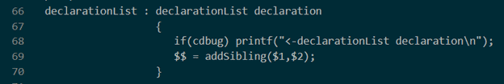

The task of building my compiler was broken into seven parts, a scanner, a parser, an abstract syntax tree, semantic analysis, error handling, memory management, and code generation. Each section builds off the previous to create functional machine code.
The Scanner
I used Flex and Bison to create a scanner for different patterns that are found in the grammar. The image below looks at some examples of pattern rules. I chose these two because they were two of the more complicated patterns I was matching.
Line 171 tries to identify any pattern of two or more characters between single quotes. Line 172 looks for any character following a backslash that is between single quotes. This code would later be adjusted. Not only should the rules be flipped to give precedence to the rule on 172 but I would break these down further for ‘\0’ and ‘\n’ because they are special to the language.
My code for this section is here!
The Parser
This part of the project defines the grammar and lays the foundation for the abstract syntax tree.

Here is just a look at one of the first rules of the language, declarationList, which can go to itself followed by a declaration or it can just go to declaration (not pictured). These rules build off each other before leading to terminals.
My grammar code is here!
The Abstract Syntax Tree
These trees represent the general flow of any code. A visual representation can be printed by setting a flag. Used for debugging and comprehension, trees are convenient for visualizing what the program knows about the input code.


The tree can also print debugging information, such as data types and memory info, depending on flags.
The recursive tree printing function is here!
Semantic Analysis & Error Handling
The main idea here is to start protecting the user from themselves and any mistakes that could occur. Here is just one example of problems I was trying to code against.

This if statement is doing some type checking and gives a helpful error message if the types do not match. Another interesting problem presented in this section is assuring break statements are only inside of loops.
Take a look at the bulk of my defense here!
Memory Management
This part of the project was about accurately calculating stack frames, their location and size. Here is what I do for the declaration of a static variable.

The static variable is held in global memory space but used in the local frame. I set the memory type for debugging. I decrement the global offset to set it and increment the local offset because the default is to set it.
Code Generation
The final step of my project was to produce machine code with the appropriate commands and offsets.
This code loads a declared variable value into the proper offset in memory. Below is just a section of machine code I produce for a program.
This file is the sent to a special machine built for this class. That machine then does whatever the input code said to do. My compiler has some bugs with arrays along with other smaller bugs sprinkled about but perfection was never the goal. The project was a learning experience, about compilers, large code bases, and problem solving. Plenty of lessons learned for my next big project!
Checkout all the machine code generation here!